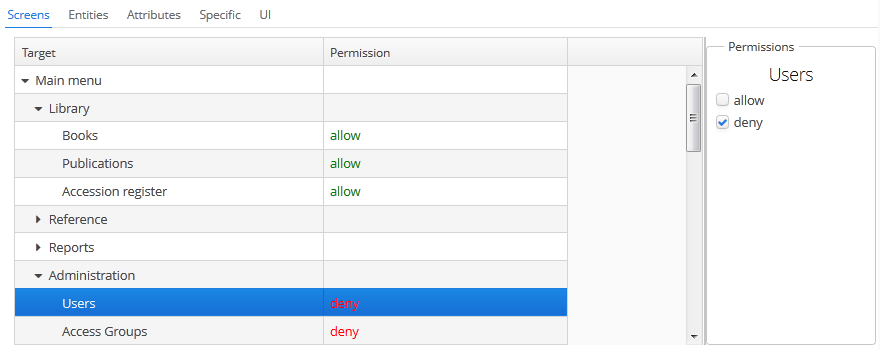
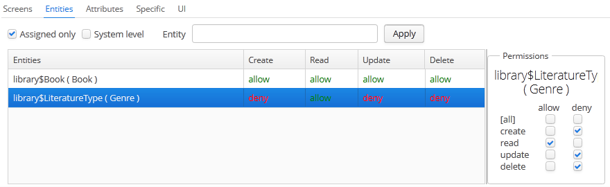
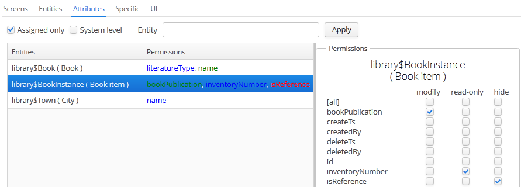
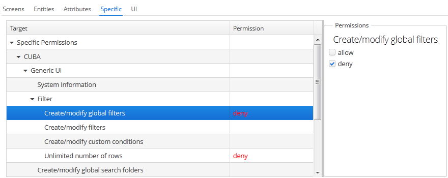
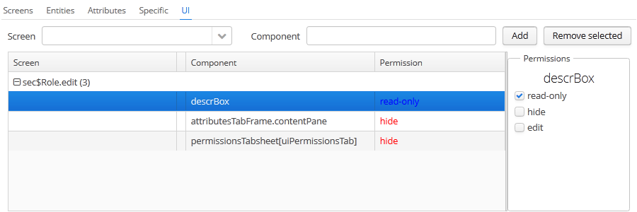

6.2.4. 角色
译者注 — 这里很多英文是界面上内容的描述，所以在翻译时，界面元素保留了很多英文以及对应的中文翻译。
角色包含权限许可集合，可以给用户分配角色。
一个用户可以有多个角色，角色之间设计为组合（逻辑或）的关系。例如，一个用户拥有角色 A，B 和 C，角色 A 拒绝 X，角色 B 允许 X，角色 C 未明确设置对 X 的权限，那么，X 对用户是允许的。
如果没有角色显式定义某个对象的权限许可，那么用户拥有该对象的许可权限。所以，当没有任何角色显式定义所有对象的权限许可时，或者至少有一个角色定义了许可权限，那么用户拥有所有对象的许可权限。
|
如果一个用户只有一个角色，并且该角色没有显示设置任何许可权限，或者用户没有任何角色，那么用户拥有所有对象的许可权限。 |
角色列表在 Administration > Roles screen 界面显示。除了标准的 create（创建）, update（编辑）, 和 delete（删除） 操作，该界面还有一个 Assign to users - 分配给用户 按钮，可以将所选的角色分配给多个用户。
角色编辑界面描述如下。角色属性显示在上方：
-
Name – 角色的唯一名称或标识，必填项。角色创建好以后该名称不能被修改。
-
Localized name – 本地化角色名称。
-
Description – 对于该角色的文本描述。
-
Type – 角色类型，可以是以下值：
-
Standard – 标准，该角色类型提供明确的权限许可。
-
Super – 超级，自动提供所有许可。应该分配给系统管理员，其它角色的拒绝设置都会被它移除。
-
Read-only – 只读，自动拒绝以下实体操作： CREATE-创建，UPDATE-修改，DELETE-删除。因此，带这个角色的用户只能读数据而不能更改（除非用户还拥有其它显式的设置许可上述操作的角色）。
-
Denying – 拒绝，自动拒绝所有对象的访问，除了实体属性。如果需要查看或者更新系统数据，需要额外分配给用户其它显式的允许必要操作的角色。
所有类型的角色都可以再额外的显式的设置权限许可。例如，可以给 Read-only 角色添加修改实体的权限。不过，给 Super 角色添加拒绝访问的设置也没有意义，因为这个角色类型会移除任何的拒绝设置。
-
-
Default role – 默认角色标记。开启了这个标记的角色会自动分配给新创建的用户。
下面是权限许可管理各个标签页的描述。
-
Screens 界面标签页配置界面的权限：
该标签页左侧的树形列表对应应用程序的主菜单。最后一个树节点是 Other screens - 其它界面，包含不在主菜单的界面（例如： 实体编辑界面）。
-
Entities 实体标签页配置实体的操作权限：
Assigned only - 只显示已分配 复选框默认生效，所以列表里只显示对该角色明确设置了的实体。因此，新创建的角色这里显示空白。需要设置权限的时候，取消勾选 Assigned only，然后点击 Apply - 应用。也可以在 Entity - 实体文本框 输入部分实体名称，点击 Apply 来做筛选。
System level - 系统 复选框允许查看选择以
@SystemLevel注解的系统实体，这类实体默认不会显示。当违反这类限制时，用户会收到错误通知。如果要本地化这类错误信息，需要在主语言包中重写 RowLevelSecurityExceptionHandler。
-
Attributes 属性标签页配置实体属性权限：
Permissions 权限列展示了显式设置过权限的熟悉。具有 modify 修改权限的标记为绿色，具有 read-only 只读权限的标记为蓝色，具有 hide 隐藏权限的标记为红色。
实体列表的展示、筛选类似于 Entities 实体标签页。
如果需要动态改变属性权限，依赖于实体当前状态或者关联实体，使用
SetupAttributeAccessHandler接口的实体属性访问控制机制。 -
Specific 特定功能标签页配置特定功能权限：
项目配置文件 permissions.xml 配置能分配特定权限的对象名称。
-
UI 界面组件标签页配置界面中组件的权限：
这里允许设置任何界面中组件的权限，包括非数据感知组件（比如容器组件）。配置这类权限需要知道组件 ID，所以需要看源代码来查找组件 ID。
创建这类权限时，在 Screen 界面下拉列表选择需要的界面，在 Component 组件 输入框输入组件 ID，点击 Add - 添加。然后在 Permissions - 权限 面板设置需要的访问权限。
组件 ID 名称的规则是：
-
如果组件属于当前界面，只要输入组件
id即可。 -
如果组件属于嵌入当前界面的 frame（子框架窗口），需要输入： frame 的 Id + “.” + 组件 Id。
-
如果为 TabSheet 或者 FieldGroup 中的组件设置权限，需要输入：组件 Id + “[” + TabSheet Id 或 FieldGroup Id + “]”。
-
如果为 action 配置权限，需要输入：action 操作的组件 Id + “<” + actionId + “>”, 例如
customersTable<changeGrade>。
-